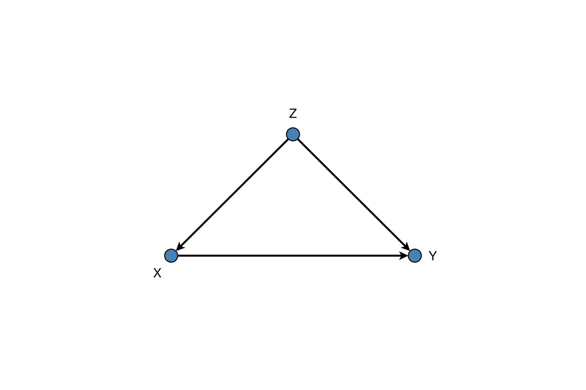

DAGMakie.jl
DAGMakie.DAGMakie — Module
DAGMakiePlot directed acyclic and related causal graphs with Makie, building on GraphMakie.jl. Defaults omit axes and grids; helpers cover common causal diagram conventions, bidirected confounding, and display-only do(·) surgery.
Identification (d-separation, adjustment sets) belongs in CausalInference.jl; executable SCMs belong in CausalDynamics.jl. Optional convenience plots that call CausalInference activate via using CausalInference.
Layouts are deterministic for DAGs; themes (dag_theme, …) control stroke and spacing. Pattern constructors include chain, fork, collider, and confounding. Prefer discoverable plot kwargs: labels, label_position, color_by, exposure, show_removed_edges (legacy aliases still work).
Quick Start
using Graphs, DAGMakie, CairoMakie
g = SimpleDiGraph(3)
add_edge!(g, 1, 2) # Z → X
add_edge!(g, 1, 3) # Z → Y
add_edge!(g, 2, 3) # X → Y
fig, ax, p = dagplot(g, labels=["Z", "X", "Y"])
save("confounding_dag.png", fig)Main Functions
dagplot(g; kwargs...)- Create a new figure with DAG plotdagplot!(ax, g; kwargs...)- Plot DAG into existing axiscompute_auto_label_aligns(g, positions)- Compute optimal label positionsdag_theme()- Return the default Makie theme for DAG figures
Convenience Patterns
dagplot_chain(labels)- X₁ → X₂ → ... → Xₙdagplot_fork(labels)- X ← Y → Zdagplot_collider(labels)- X → Y ← Zdagplot_confounding(labels)- Z → X → Y, Z → Ydagplot_mediation(labels)- X → M → Y, X → Y
See the documentation for full details and examples.
DAGMakie draws causal diagrams for observational studies, experiments, and time-evolving biological systems using Makie, making confounders, mediators, unmeasured variables, interventions, and temporal structure explicit before fitting a statistical model.
Deciding which diagram fits your study? See Choosing a diagram to match your biological question or study design to the right graph type and helper.
DAGMakie plots directed acyclic, directed cyclic, and mixed causal graphs with Makie, building on GraphMakie.jl. Defaults omit axes and grids; node types follow common causal-diagram conventions from Pearl (2009) and related practice (observed, latent, treatment, outcome), with helpers for bidirected confounding, path highlighting (Textor et al., 2016, dagitty-style roles), display-only do(·) surgery, and a visual grammar for interaction IDAGs and DiD SWIGs. Example layouts often follow Cinelli, Forney & Pearl (2024, doi:10.1177/00491241221099552). Temporal glyphs, single-node placement, and display-only surgery are summarised in Terminology; boundaries and validation checks live in Scope & boundaries (BOUNDARIES.md). DOIs and BibTeX keys: References.
Compared with R and Python
DAGMakie brings layered causal DAGs, bidirected confounding arcs, dagitty-style path/role highlighting, time-indexed layouts, and SWIG/DiD visual grammar into Julia’s Makie stack—alongside SciML, CausalDynamics.jl, CausalTargeted.jl, and CausalMediation.jl. Choose DAGMakie when causal figures should live in Julia and Documenter; prefer ggdag / dagitty for tidyverse pipelines or the dagitty web GUI. See Ecosystem comparison and ECOSYSTEM_COMPARISON.md.
Capabilities
Layouts are deterministic for DAGs (layered) and SCC-aware for cyclic graphs. Edges are straight by default; mark curved edges with :curved, CurvedEdge(), or a bow fraction to receive quadratic Bézier samples (long_edge_routing = :quadratic) (Basic Plotting). Undirected skeletons and time-indexed grids cover CPDAG output and unrolled temporal DAGs (Skeletons & Time). Themes (default, minimal, bold, presentation) control stroke weight and spacing. Node labels prefer labels=; default label_position = :outer (compact markers, external auto-aligned text). Use :inner with fit_node_size_to_labels=true for in-node white labels. Optional color_by role colouring; on time-indexed plots, roles propagate across variable rows (see Skeletons & Time). Convenience constructors cover chain, fork, collider, confounding, and mediation patterns. Edge labels (elabels, structural_edge_labels) carry structural path coefficients or short LaTeX mechanism fragments (Getting Started). Path helpers accept adjustment sets directly, or load CausalInference / CausalDynamics when identification should be computed at plot time.
Installation
using Pkg
Pkg.add("DAGMakie")DAGMakie is on the Julia General registry. It is visualisation-only; identification and do(·) calculus stay in CausalInference.jl or CausalDynamics.jl.
Or for development:
Pkg.develop(path="path/to/DAGMakie.jl")Quick example
using DAGMakie, CairoMakie
# Confounding DAG Z → X → Y, Z → Y (triangle layout: confounder on top)
fig, ax, p = dagplot_confounding(["Z", "X", "Y"])
fig
Documentation
- Guides: Choosing a diagram · Getting Started · Basic plotting · Node types & styling · Visual grammar · Skeletons & time · Bidirected edges · Causal highlighting · Interventions
- API Reference: Overview · Plotting · Specs & graphs · Highlighting & interventions · Temporal & skeletons · Layout & themes
- Architecture & Validation: Scope & boundaries · Terminology · Ecosystem comparison · References